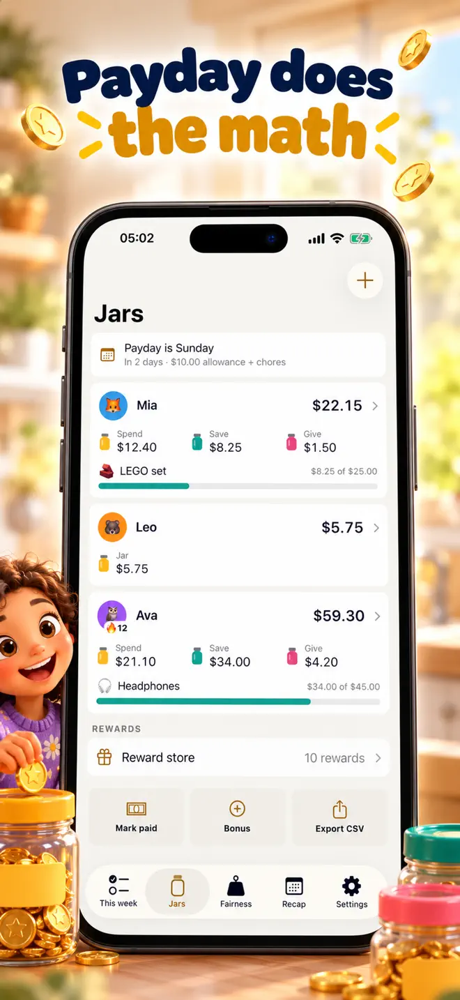
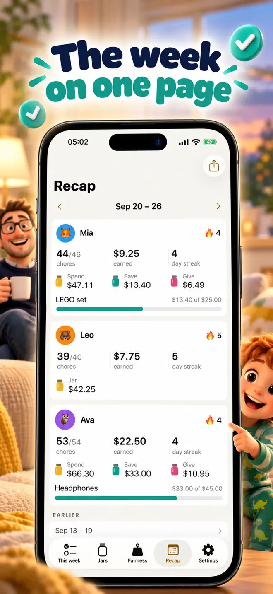
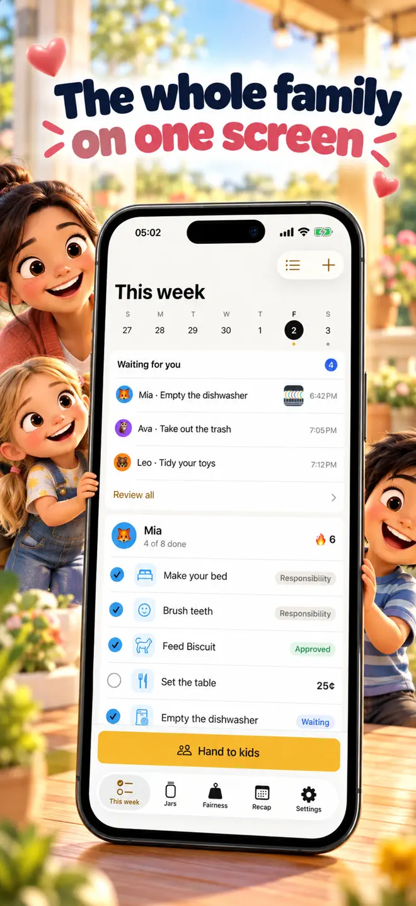

Every chore, every kid, one phone.
Your kids tap their own PIN on your phone or the family tablet, tick off what they did, and watch their jar fill up. You approve, the app does the math, and payday comes with a fairness check so nobody can say the other one got off easy.
iPhone, iPad and Android · No account · No app on your kids' devices

What it does
A week of chores in five minutes
Kid Mode with a PIN each
Hand the phone over and it switches to big icons and few words, with no way out except the parent PIN. Picture PINs for kids who do not know numbers yet.
Age-based templates
Start from sets for ages 3 to 5, 6 to 8 and 9 to 12, and add a dozen chores at once.
Schedules that fit real weeks
Daily, chosen weekdays, a few times a week, once or monthly. Missed chores are marked, never carried over as debt.
Rotate between siblings
Assign a chore to one kid, rotate it each week or each day, or leave it open for whoever does it first.
Approve, pay part, send back
Review what was done, with an optional photo as proof, and send a note the kid reads in Kid Mode.
Reward store
Kids spend what they earned on movie night or fifteen more minutes before bed. You confirm before anything is deducted.
Allowance
Allowance that adds itself up
How it works
Made for kids who cannot read yet, too
Hand to kids
They tap their PIN and see morning, evening and anytime chores.
One tap to finish
Read-aloud says the chore name; a visual countdown runs for brushing teeth or reading.
Confetti, then payday
Streaks and badges at 7, 30 and 100 days, and a weekly recap you can share as a PDF.


Your data
Nothing leaves your phone
- No account.
- No app on your kids' devices. Everything runs on yours.
- Nothing leaves your phone unless you share a recap or export.
- Export everything as CSV for a spreadsheet.
Questions
Before you download
Do my kids need their own phone or account?
No. Chore Jar runs on your phone or the family tablet. Each kid has a PIN, and there is no account and no app on their devices.
What ages is Chore Jar for?
Templates cover ages 3 to 5, 6 to 8 and 9 to 12. Picture PINs and read-aloud help kids who cannot read yet.
Can it track allowance?
Yes, in money, stars or points, with Spend, Save and Give jars, a weekly payday, savings goals and optional parent-bank interest.
How does it keep things fair between siblings?
A fairness view shows what each kid was assigned, did and earned, flags when one is carrying much more than another, and proposes swaps for next week.
Can kids cheat by marking chores done?
You approve what they tick off. You can require a photo as proof, pay part, or send a chore back with a note.
Which devices and languages does Chore Jar support?
iPhone and iPad (iOS 17 or later) and Android. The app is in English.
- Made for
- Parents of children aged about 3 to 12 who want a chore chart and allowance tracker
- Platforms
- iPhone and iPad (iOS 17 or later) · Android
- Languages
- English
- Category
- Productivity
- Developer
- Ho Van Dai
- Page updated